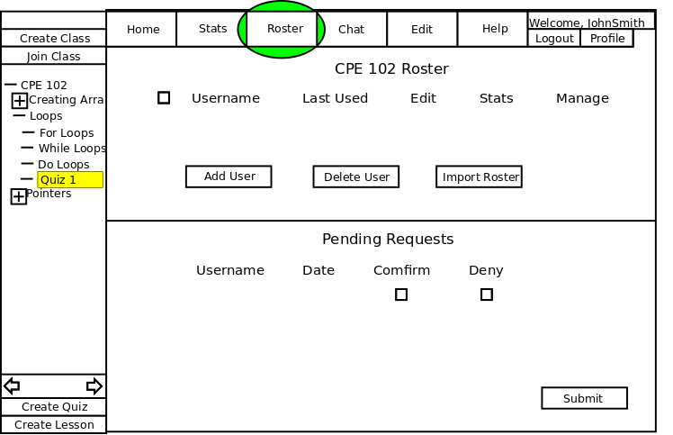
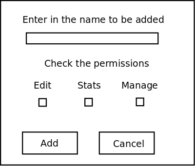
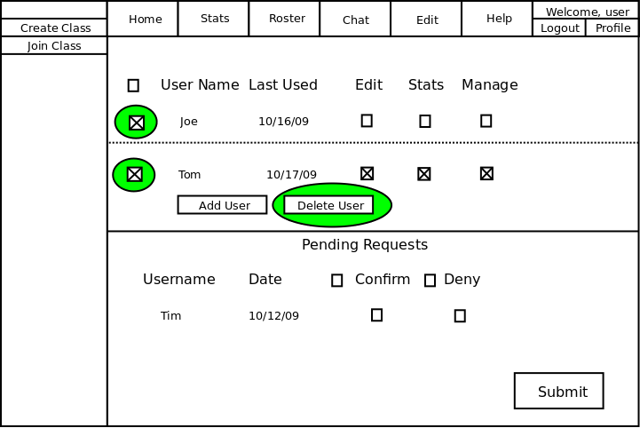
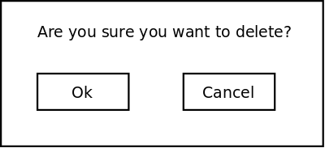
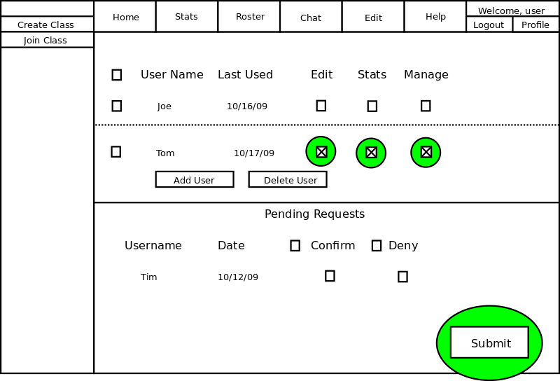
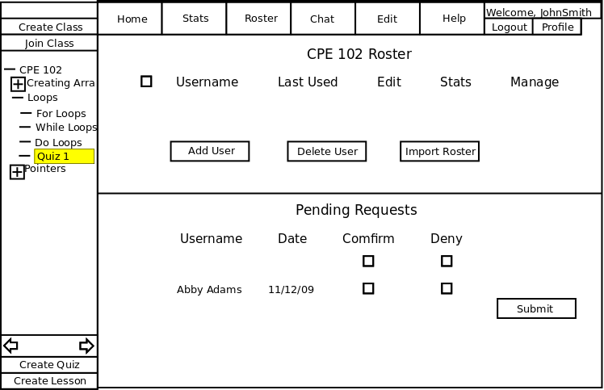

The scenarios in this section show an instructor how to add and remove users to/from the class roster. The instructor can also edit the users' permissions. In addition, the instructor can manage students' requests to join the class.
To display the Roster page the instructor clicks the Roster button highlighted in Figure 2.3.4-1. This button is shown on any page the instructor is on.
Figure 2.3.4-1 shows an overview of the roster page.

Figure 2.3.4-1
On this screen, a roster of 2 students is shown and there is also 1 student that has a pending request to join the class. The checkboxes next to a student's name indicated which permissions the student has in the class. In addition, the checkboxes next to a student requesting to join a class allows an instructor the either confirm or deny the student's request. The instructor can also use the Submit button to save any changes made on the roster page.
This scenario shows how the instructor of a class can add users to the class roster.
Adding users is important because it allows the instructor to put students into a class for stat tracking and allows students to view the lessons in the class. The instructor can also set permissions to allow a teacher's assistant to help manage the class.
In this scenario, we assume that the instructor has just logged into the appropriate class and is looking at the instructor page.
Details of logging in as an instructor can be found in
Section 2.1.
To add a user to the class roster, the instructor clicks Add User button on the roster screen and the diaglog box shown in Figure 2.3.4.1-1 is shown by the system.

Figure 2.3.4.1-1: Add User Dialog.
The user field is a one line string where a person's user name is typed in. After the user name is entered, click Add to add the user to the class roster.
This scenario shows the instructor of a class how to remove users from the class roster.
Removing users is important because it allows the instructor to properly manage the class roster.
In this scenario, we assume that the instructor has logged in, selected the appropriate class, and is viewing the roster page.
Details of logging in as an instructor can be found in
Section 2.1
To remove a user from the class roster, the instructor selects one of the check boxes to the left of a student's name. Then, the instructor clicks the Delete User button on the roster management screen. Figure 2.3.4.2-1 shows how this is done by highlighting the checkboxes and the Delete User button.

Figure 2.3.4.2-1: Delete User Dialog.
After clicking Delete User, the system shows the following dialog box shown in figure 2.3.4.2-2.

Figure 2.3.4.2-2: Remove User Confirmation.
To confirm deleting a user, the instructor clicks the Ok button. In addition, the instructor can click the check box above all the user names to select all the users in a class.
This scenario shows the instructor of a class how to edit user's permissions in class roster.
Editing permissions is important because it allows the instructor the option of having a teacher's assistant or give extra permissions to students in the class.
In this scenario, we assume that the instructor has logged in, selected the appropriate class, and is viewing the roster page.
Details of logging in as an instructor can be found in
Section 2.1
This scenario shows how the instructor of a class can edit permissions for users currently in the class. To edit a user's permissions, the instructor clicks the check boxes to the right of a user's name. Then, the instructor clicks the Submit button at the bottom of the screen to save the changes. Figure 2.3.4.2-1 shows how this is done.

Figure 2.3.4.3-1: Edit User.
This scenario shows the instructor of a class how to manage requests to join the class roster.
Managing requests to join the class roster is important because it lets students join a private class and read the tutorials associated with it.
In this scenario, we assume that the instructor has logged in, selected the appropriate class, and is viewing the roster page.
Details of logging in as an instructor can be found in
Section 2.1
To manage pending requests, the instructor looks at the bottom of the Roster Management page to see if there is anyone requesting to join the class. To confirm or deny someone's request, the instructor can click the check box in either the confirm or deny collumn. The instructor can also click the check box at the top of the confirm or deny column to either confirm all request or deny all requests. To save the changes, the instructor clicks the Submit button at the bottom of the screen. Figure 2.3.4.4-1 shows how this is done.

Figure 2.3.4.4-1: Pending Requests.
Prev: Using the Statistics Page | Next: Previewing a Lesson | Up: Using the Instructor Page | Top: index